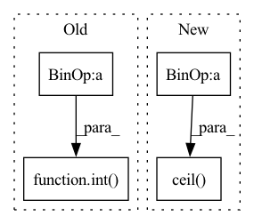

Pattern ID :22053
Before Change
h, w = img.shape[2:]
s = (int(h * ratio), int(w * ratio)) // new size
img = F.interpolate(img, size=s, mode="bilinear", align_corners=False) // resize
p = h - s[0], w - s[1]
if not same_shape: // pad/crop img
p = [int( math.fmod(x, 64)) for x in p] // pad to 64 grid size
return F.pad(img, [0, p[1], 0, p[0]], value=0.447) // value = imagenet mean
After Change
img = F.interpolate(img, size=s, mode="bilinear", align_corners=False) // resize
if not same_shape: // pad/crop img
gs = 64 // (pixels) grid size
h, w = [math.ceil( x * ratio / gs) * gs for x in (h, w)]
return F.pad(img, [0, w - s[1], 0, h - s[0]], value=0.447) // value = imagenet mean
In pattern: SUPERPATTERN
Frequency: 3
Non-data size: 4
Instances Fragment ID: 69877450
Project Name: nightsnack/yolobile
Commit Name: b9b14bef590141c201b5aad74147e82b0fb18903
Time: 2020-04-07
Author: glenn.jocher@ultralytics.com
File Name: utils/torch_utils.py
M Class Name: AnonimousClass
N Class Name: AnonimousClass
M Method Name: scale_img(3)
N Method Name: scale_img(3)
M Parent Class:
N Parent Class:
M File Name: utils/torch_utils.py
N File Name: utils/torch_utils.py
M Start Line: 121
M End Line: 126
N Start Line: 121
N End Line: 126
Before Change
if norm_layer is None:
norm_layer = nn.BatchNorm2d
hidden_dim = int( round(inp / expand_ratio))
self.use_res_connect = self.stride == 1 and inp == oup
layers = []
// dwAfter Change
hidden_dim = inp // expand_ratio
if hidden_dim < oup /6.:
hidden_dim = math.ceil( oup / 6.)
hidden_dim = _make_divisible(hidden_dim, 16)
self.use_res_connect = self.stride == 1 and inp == oup
Fragment ID: 69877405
Project Name: rangilyu/mobilenext
Commit Name: bc5773f58943aff347c17356af4e671cfe11fe1b
Time: 2020-08-09
Author: lyuchqi@gmail.com
File Name: mobilenext.py
M Class Name: SandGlass
N Class Name: SandGlass
M Method Name: __init__(7)
N Method Name: __init__(7)
M Parent Class: nn.Module
N Parent Class: nn.Module
M File Name: mobilenext.py
N File Name: mobilenext.py
M Start Line: 58
M End Line: 58
N Start Line: 63
N End Line: 68
Before Change
if exists(mask):
logits = logits.masked_fill(~mask, -torch.finfo(logits.dtype).max)
num_keep = max(1, int( (1 - dropout) * n) )
keep_indices = logits.topk(num_keep, dim = 1).indices
batch_indices = torch.arange(b, device = device)After Change
if exists(mask):
seq_counts = mask.sum(dim = -1)
seq_keep_counts = torch.ceil( seq_counts * keep_prob) .int()
keep_mask = torch.arange(num_keep, device = device) < rearrange(seq_keep_counts, "b -> b 1")
mask = mask[batch_indices, keep_indices] & keep_mask Fragment ID: 69877462
Project Name: lucidrains/perceiver-pytorch
Commit Name: c8c5f5721520460369a66b8a0e9c5147df4a883e
Time: 2022-12-04
Author: lucidrains@gmail.com
File Name: perceiver_pytorch/perceiver_io.py
M Class Name: AnonimousClass
N Class Name: AnonimousClass
M Method Name: dropout_seq(3)
N Method Name: dropout_seq(3)
M Parent Class:
N Parent Class:
M File Name: perceiver_pytorch/perceiver_io.py
N File Name: perceiver_pytorch/perceiver_io.py
M Start Line: 40
M End Line: 51
N Start Line: 40
N End Line: 56